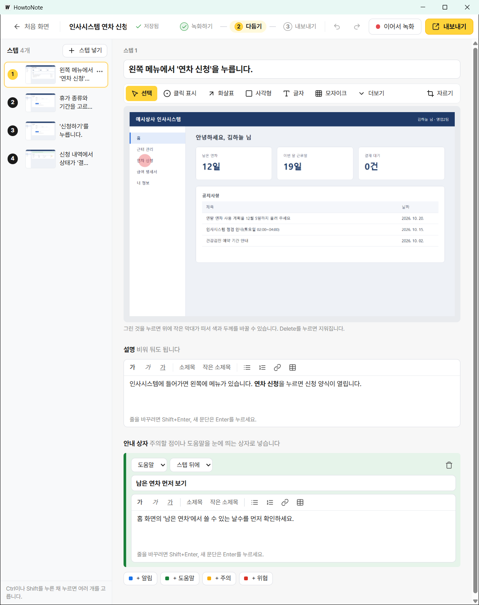
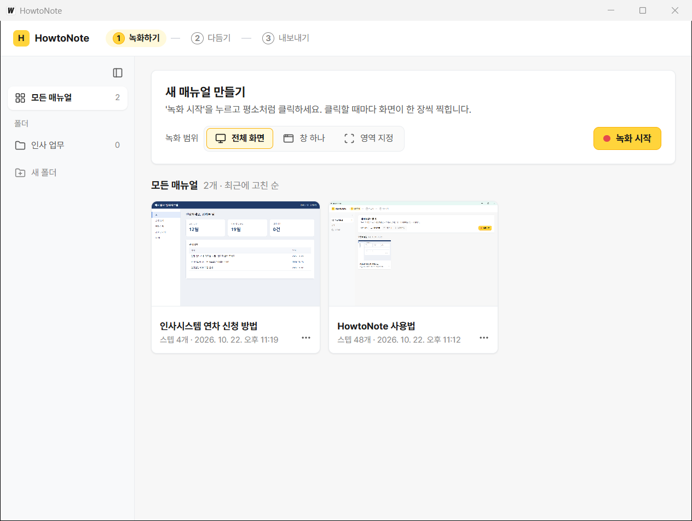

업무 매뉴얼 자동 작성 · Windows 10/11
평소처럼 클릭하면
매뉴얼이 써집니다
'녹화 시작'을 누르고 하던 일을 하세요. HowtoNote가 클릭할 때마다 화면을 찍고 “'연차 신청'을 클릭합니다.”처럼 한국어 문장으로 단계를 적습니다. 다듬은 뒤 한/글, PDF, 워드, 웹 문서로 저장합니다.
- 1녹화하기
- 2다듬기
- 3내보내기
- 인터넷 없이 동작
- 계정·서버 없음
- 한/글(HWPX) 내보내기
- 한국어 화면

왜 HowtoNote인가
매뉴얼 만드는 시간 대부분은 캡처와 붙여넣기입니다
업무 매뉴얼은 같은 일을 화면 수만큼 되풀이해 만듭니다. HowtoNote는 그 되풀이를 일하는 동안 대신 합니다. 사람은 내용을 다듬는 데만 시간을 씁니다.
- 화면을 캡처합니다.
- 문서에 붙여 넣고 필요한 부분만 자릅니다.
- 누른 자리에 빨간 네모를 그립니다.
- 번호를 매기고 무엇을 눌렀는지 적습니다.
- 이름이나 사번이 보이면 가립니다.
- 한/글 서식과 쪽 나눔을 맞춥니다.
- 첫 화면에서 '녹화 시작'을 누릅니다.
- 평소처럼 일합니다. 클릭할 때마다 화면, 클릭 표시, 제목이 쌓입니다.
- 제목과 그림을 다듬고, 가릴 곳은 모자이크합니다.
- 형식을 골라 '저장'을 누릅니다. 번호, 목차, 쪽 번호는 알아서 붙습니다.
처음 쓰는 사람도 끝까지 갑니다
기본값만으로 매뉴얼 한 편이 나옵니다. 녹화 범위는 전체 화면이 기본이고, 세부 설정은 '고급 설정'에 접혀 있습니다.
누가 만들어도 같은 모양입니다
스텝 번호, 제목 문체, 안내 상자, 표지와 목차가 같은 규칙으로 나옵니다. 사람마다 모양이 다른 매뉴얼을 맞출 일이 줄어듭니다.
화면이 바뀌면 그 부분만 다시 찍습니다
'이어서 녹화'로 바뀐 화면만 더 찍어 넣고 옛 스텝은 지웁니다. 매뉴얼을 처음부터 다시 만들지 않아도 됩니다.
이 프로그램의 사용 설명서 'HowtoNote 사용법'(6장 48스텝, PDF 43쪽)도 HowtoNote로 만들었습니다.
좋은 점
써 보면 편한 점
매일 매뉴얼을 만드는 사람이 아니어도 도움말 없이 한 편을 끝낼 수 있게 만들었습니다.
제목이 자연스러운 한국어입니다
받침에 따라 '을'과 '를'을 고르고, 단추 이름에 붙은 단축키 표시를 지웁니다. 비밀번호 입력란은 글자 대신 ●●●●로 적습니다.
지금 할 일이 화면에 보입니다
화면 위 3단계 막대가 녹화하기, 다듬기, 내보내기 중 어디인지 알려 줍니다. 모든 단추에 무엇을 하는지 알려 주는 툴팁이 있습니다.
어려운 말을 쓰지 않습니다
'주석' 대신 '그리기', '콜아웃' 대신 '안내 상자', '프리셋' 대신 '문서 모양'이라고 씁니다. 오류가 나면 무엇을 하면 되는지 한 문장으로 알려 줍니다.
원본 그림은 그대로 남습니다
자르기와 모자이크는 원본 위에 얹는 표시입니다. 나중에 자른 범위를 넓히거나 모자이크를 옮길 수 있습니다.
실수해도 되돌릴 수 있습니다
1초마다 자동으로 저장하고, 실행 취소와 지운 스텝 되살리기가 있습니다. 저장이 안 되면 창을 닫기 전에 다시 묻습니다.
기다리지 않습니다
클릭부터 스텝 저장까지 0.3초입니다(통합 테스트 기준). 녹화 툴바는 스크린샷에 찍히지 않아 따로 지울 필요가 없습니다.
제목은 이렇게 적힙니다
단추, 메뉴, 탭, 입력란, 체크 상자, 링크를 알아보고 종류에 맞는 문장을 고릅니다. 이름이 없으면 주변 글자를 읽어 씁니다.
표의 문장은 제목 규칙 테스트에 있는 실제 예입니다. 노랗게 표시한 글자가 받침을 보고 고른 조사입니다.| 누른 것 | HowtoNote가 적는 제목 |
|---|---|
단추 저장(&S) | '저장' 버튼을 클릭합니다. |
메뉴 다른 이름으로 저장(A)... | '다른 이름으로 저장' 메뉴를 선택합니다. |
| '이름' 입력란에 홍길동 입력 | '이름' 입력란에 '홍길동'을 입력합니다. |
| '이름' 입력란에 김철수 입력 | '이름' 입력란에 '김철수'를 입력합니다. |
| 비밀번호 입력란에 입력 | '비밀번호' 입력란에 '●●●●'를 입력합니다. |
| 체크 상자 '자동 저장' 켜기 | '자동 저장'을 선택합니다. |
| 체크 상자 '미리 보기' 끄기 | '미리 보기'를 해제합니다. |
| 이름 없는 단추(글자 '확인') | '확인'을 클릭합니다. |
업무망
업무망에서 특히 좋은 점
인터넷이 막힌 PC, 보안 프로그램이 여럿 도는 PC, 한/글을 표준으로 쓰는 기관을 기준으로 설계했습니다. 처음부터 오프라인 전용입니다.
망 밖으로 나가는 통신이 없습니다
계정, 로그인, 클라우드, 사용 통계 전송이 없습니다. PDF도 프로그램 안에서 만들고, 그동안 원격 요청을 막습니다. PC 한 대 안에서 모든 일이 끝납니다.
한/글 문서로 바로 냅니다
HWPX로 표지, 목차, 머리말·꼬리말 쪽 번호까지 만듭니다. 워드로 만든 뒤 한/글로 옮겨 서식을 다시 맞출 일이 없습니다.
가릴 것은 알아서 가립니다
비밀번호는 읽지 않고 ●●●●로 적습니다. 나눠 줄 파일은 모자이크를 그림에 굳히고 원본을 빼서, 받은 사람이 가린 곳을 되살릴 수 없습니다. 내보낸 문서에는 PC 경로나 사용자 이름이 들어가지 않습니다.
서버 없이 주고받습니다
매뉴얼을 .htn 파일 하나로 저장합니다. 메일, 이동식 저장 매체, 망 간 자료 전송으로 옮기면 받은 사람이 첫 화면 '가져오기'로 열어 고쳐 씁니다.
도입 검토 때 자주 받는 질문
- 구현됨자동 테스트로 확인
- 현장 확인기관 PC에서 확인할 것
- 준비 중다음 단계
| 질문 | 답 | 상태 |
|---|---|---|
| 인터넷 연결이 필요한가요? | 필요 없습니다. 녹화, 편집, 내보내기가 모두 PC 안에서 끝납니다. | 구현됨 |
| 바깥으로 데이터를 보내나요? | 보내지 않습니다. 계정과 사용 통계 전송이 없고, PDF를 만들 때는 원격 요청을 막습니다. | 구현됨 |
| 비밀번호가 기록되나요? | 비밀번호 입력란의 값은 읽지 않습니다. 제목에는 ●●●●로 적습니다. | 구현됨 |
| 화면 속 개인정보는요? | 모자이크로 가립니다. 나눠 줄 .htn은 모자이크와 자르기를 그림에 굳히고 원본을 넣지 않습니다. 숨긴 스텝도 빠집니다. | 구현됨 |
| 내보낸 문서에 PC 정보가 남나요? | PC 경로와 사용자 이름이 들어가지 않게 막고 검사 도구로 확인합니다. .htn에는 녹화한 PC 정보 중 화면 배율만 남습니다. | 구현됨 |
| 인터넷 없는 PC에서 문서가 열리나요? | 웹 문서(HTML)는 글꼴과 그림까지 파일 하나에 담습니다. PDF는 글꼴을 넣어 저장합니다. | 구현됨 |
| 한/글에서 열리나요? | HWPX 스키마 검사를 통과합니다. 한/글 2020·2022·2024와 한컴오피스 뷰어에서 직접 여는 확인이 남아 있습니다. | 현장 확인 |
| 백신이나 EDR이 막지 않나요? | 디버그 포트를 연 브라우저나 다른 프로그램을 띄우지 않습니다. Microsoft Defender 검사와 녹화 실행에서 탐지가 없었습니다. V3와 알약은 기관 PC에서 확인합니다. | 현장 확인 |
| 어떻게 설치하나요? | 설치판과 포터블판을 만들 예정입니다. 인터넷 없이 설치되도록 WebView2 런타임을 함께 넣습니다. | 준비 중 |
지금 되는 것
지금 구현된 기능
개발 버전 0.0.1 기준입니다. 녹화하기, 다듬기, 내보내기 세 단계마다 이만큼 됩니다.
첫 화면에서 바로 시작합니다
녹화 범위를 전체 화면, 창 하나, 영역 지정 중에서 고르고 '녹화 시작'을 누릅니다. 만든 매뉴얼은 첫 장면이 보이는 카드로 모이고, 폴더로 나눠 둘 수 있습니다.

1녹화하기
- 클릭한 순간의 화면을 찍고 누른 자리를 표시합니다.
- 단추, 메뉴, 탭, 입력란을 알아보고 제목을 적습니다(UI Automation).
- 이름 없는 단추는 주변 글자를 읽어 제목을 만듭니다(tesseract OCR이 있을 때).
- 입력한 값까지 한 스텝으로 적고, 비밀번호는 가립니다.
- 같은 자리 더블클릭은 한 스텝으로 합칩니다.
- 단축키는 Ctrl+Shift와 함께 F9 일시정지, F10 지금 화면 찍기, F11 끝내기
- 녹화 툴바는 스크린샷에 찍히지 않고, 끝나면 창 배치를 되돌립니다.
2다듬기
- 스텝 순서 바꾸기, 하위 스텝(1.1), 숨기기, 지우기와 되살리기
- 그리기 9종: 클릭 표시, 화살표, 사각형, 글자, 모자이크, 타원, 말풍선, 번호, 형광펜
- 자르기. 원본 그림은 그대로 둡니다.
- 설명 서식: 굵게, 기울임, 밑줄, 소제목, 목록, 링크, 표
- 안내 상자 4종: 알림, 도움말, 주의, 위험
- 글 스텝, 그림 스텝 넣기와 화면 캡처 붙여 넣기
- 1초 자동 저장, 실행 취소, 이어서 녹화
3내보내기
- 한/글(HWPX), PDF, 워드(DOCX), 웹 문서(HTML)
- 표지, 목차, 쪽 번호, 머리글·바닥글
- 문서 모양: 용지, 방향, 스텝마다 새 쪽, 그림 크기, 글꼴(기본, 맑은 고딕, 함초롬돋움)
- HowtoNote 파일(.htn): 고쳐 쓸 사람에게, 나눠 줄 사람에게
- 받은 .htn은 첫 화면 '가져오기'로 바로 엽니다.
- 저장한 뒤 '폴더 열기'로 파일 자리를 보여 줍니다.
한 번 만들어 다섯 가지로 저장합니다
- HWPX한글한/글에서 고쳐 쓸 때
- PDFPDF인쇄하거나 그대로 나눠 줄 때
- DOCX워드Word에서 고쳐 쓸 때
- HTML웹 문서브라우저로 열어 볼 때. 파일 하나로 끝납니다.
- HTNHowtoNote고쳐 쓸 사람에게는 편집용, 나눠 줄 사람에게는 배포용